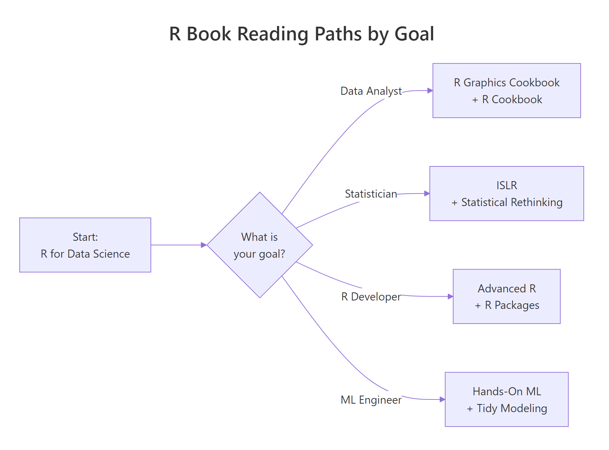

Best R Books: A Curated Reading List That Won't Waste Your Time
Most R book lists are undifferentiated 20-book dumps. This one is ranked, opinionated, and tells you exactly when to skip a book — because nobody reads 20 books. Pick one entry point, finish it, then branch by goal.
Why does R have so many good free books?
R has a book problem most languages envy: there are too many good books, most are free online, and several are written by the people who built the tools you will use every day. The risk is not finding a bad book — it is reading five overlapping ones and never getting past the basics. The fix is to pick one entry point, finish it, then specialise. This list walks that exact path.
The reason R's book ecosystem looks this way is historical. R grew out of academic statistics, where sharing the textbook is the culture. Hadley Wickham and the Posit team extended that culture to the tidyverse, publishing most of their books free online under the bookdown project while also selling print editions through CRC Press. You get the same text either way.
That abundance has a cost. Plenty of older R books are technically still in print but effectively abandoned — they reference dplyr 0.5, the plyr package, or base graphics idioms nobody writes anymore. The signal for "still current" is simple: check when the book was last updated and whether it uses the native pipe |>, across(), and tidyr 1.0+ syntax. If it uses mutate_if() or %>% exclusively without mention of |>, it is from a previous era.
Where should a complete beginner start?
If you have never written a line of R, there is one honest answer: R for Data Science (2nd edition) by Hadley Wickham, Mine Çetinkaya-Rundel and Garrett Grolemund. It is free at r4ds.hadley.nz, it is updated for the native pipe, and it walks you from zero to a complete data analysis workflow using the tidyverse. No other beginner book gets you productive as fast.
The 2nd edition matters. The 1st edition uses the magrittr pipe %>%, older dplyr idioms, and a few deprecated tidyr functions. If you pick up a used copy from 2017, you will have to translate code as you read it. Always link to r4ds.hadley.nz, not r4ds.had.co.nz.
R for Data Science has two common alternatives, and each makes sense for a specific reader. Hands-On Programming with R by Garrett Grolemund (free at rstudio-education.github.io/hopr) teaches R as a programming language — you build a slot machine, simulate dice, and learn about environments and scoping. Pick this one if your goal is to understand R, not just use it for analysis. Learning Statistics with R by Danielle Navarro teaches R and introductory statistics together. Pick this one if you also need the stats foundation — hypothesis testing, regression, ANOVA — and you do not have it yet from a prior course.
Here is the short version in table form:
| Book | Best for | Skip if |
|---|---|---|
| R for Data Science (2e) | Data analysis workflow, tidyverse from day one | You already know dplyr and ggplot2 fluently |
| Hands-On Programming with R | Understanding R as a programming language | You come from another language and want analysis-ready skills fast |
| Learning Statistics with R | Learning stats and R together from zero | You already have an introductory stats course |
Finish the one you picked before adding a second. This is the most common place readers stall — buying a second beginner book as a form of procrastination.
Which book teaches modern data wrangling best?
If "modern data wrangling" means tidyverse — dplyr, tidyr, stringr, lubridate — the answer is still R for Data Science. Chapters 4–8 cover the core verbs (filter, select, mutate, summarise, group_by), pivoting, and joins with exactly the depth a working analyst needs. You do not need a second book for everyday wrangling.
Two companions are worth knowing about. Practical Data Science with R (2nd edition) by Nina Zumel and John Mount is the book to read after R4DS if your job involves messy business data — inconsistent column headers, mixed types, join-key mismatches, and the everyday reality of data that was never designed for analysis. It is stronger on real-world data cleaning than R4DS, which uses well-behaved example datasets.
R Cookbook (2nd edition) by JD Long and Paul Teetor is indexed by problem, not by concept. You do not read it — you look things up. When you need "how do I read a fixed-width file" or "how do I compute a rolling mean by group," the cookbook points you at the three-line answer in seconds. Keep it as a reference, not a tutorial.
_at, _if, and _all variants with across(), and tidyr reworked pivot_longer() and pivot_wider(). Older books still teach mutate_at() and gather()/spread(). The code still runs, but nobody writes it that way anymore, and you will have to unlearn it later.What's the best book for R visualisation?
R's visualisation story is dominated by ggplot2, and there are two books you should actually know about. The first is ggplot2: Elegant Graphics for Data Analysis (3rd edition) by Hadley Wickham, Danielle Navarro and Thomas Lin Pedersen — free at ggplot2-book.org. It teaches the grammar of graphics: layers, scales, facets, coordinates, themes. Read it once, slowly, and ggplot2 stops feeling like memorising incantations.
The second is R Graphics Cookbook (2nd edition) by Winston Chang, free at r-graphics.org. It is organised as 150+ recipes: "How do I add error bars?", "How do I make a grouped bar chart?", "How do I flip a legend?". You do not read it cover to cover — you open it when a visual problem lands on your desk.
If you want to go beyond "what button do I press" into why a chart communicates well, Fundamentals of Data Visualization by Claus Wilke (free at clauswilke.com/dataviz) is the best design-principles book in the R orbit. It is not strictly an R book — the examples happen to be in R — but it teaches chart selection, colour choice and proportional encoding better than anything else on this list.
Which books will make you an expert R programmer?
There is exactly one book that separates "I use R" from "I understand R," and it is Advanced R (2nd edition) by Hadley Wickham, free at adv-r.hadley.nz. It covers functions, environments, lazy evaluation, R's three object-oriented systems (S3, S4, R6), and metaprogramming. Every concept that makes R look weird from outside — unquoted column names in dplyr, the funny scoping rules, formulas as first-class values — is explained from first principles.
Pair it with R Packages (2nd edition) by Hadley Wickham and Jenny Bryan, free at r-pkgs.org. Once you understand R, you will want to organise your code into packages. This book walks you through the modern package workflow: usethis, devtools, testthat, roxygen2, pkgdown, and GitHub Actions for CI. It pairs with Advanced R the way a lab pairs with a lecture.
A third option in this tier is The Art of R Programming by Norman Matloff. It takes a software-engineering angle rather than Wickham's mathematical-linguistic one, and it covers things Advanced R skips: debugging workflows, calling C from R, performance tuning on a lower level. It is older, but the fundamentals have not changed. Read it if Advanced R's metaprogramming chapters feel too abstract and you want something closer to the metal.
Which books cover statistics and machine learning in R?
The free textbook the entire statistical-learning field standardised on is An Introduction to Statistical Learning with R (2nd edition) by James, Witten, Hastie and Tibshirani — free at statlearning.com. It covers linear and logistic regression, resampling, tree methods, SVM, clustering, and (in the 2nd edition) deep learning and survival analysis, with R labs that make every method runnable. If you want one ML book with R, this is it.
For a more applied, "how do I actually put this into production" angle, Hands-On Machine Learning with R by Bradley Boehmke and Brandon Greenwell (free at bradleyboehmke.github.io/HOML) is the sibling book. It walks through realistic ML pipelines — feature engineering, resampling, hyperparameter tuning, model interpretation — using caret and the tidymodels ecosystem.
Tidy Modeling with R by Max Kuhn and Julia Silge (free at tmwr.org) is the official tidymodels book and the one to read if you want your ML code to look like modern tidyverse. It replaces caret (which Kuhn himself wrote) with parsnip, recipes, workflows and rsample. If you are starting ML in R today, start with this book.
And then there is Statistical Rethinking (2nd edition) by Richard McElreath. It is a Bayesian statistics book that uses R and Stan, and it is — by wide agreement — the best-written statistics textbook of the last decade. McElreath teaches causal reasoning, prior choice and posterior interpretation with clarity you rarely see in statistics writing. The printed book uses the rethinking package; Solomon Kurz maintains a free tidyverse-and-brms port at bookdown.org/content/4857 if you prefer that.
What about specialised domains — time series, text, Bayesian, geospatial?
Four specialised books are each the best in their niche, and all of them are free.
Forecasting: Principles and Practice (3rd edition) by Rob Hyndman and George Athanasopoulos — free at otexts.com/fpp3 — is the time-series book. It uses the modern fable / tsibble stack, covers exponential smoothing, ARIMA and dynamic regression, and is written by the maintainer of the forecast and fable packages. If you work on time-series problems, this is the only book you need.
Text Mining with R by Julia Silge and David Robinson — free at tidytextmining.com — is the NLP-adjacent book. It introduces the tidytext workflow (one-token-per-row) and walks through sentiment analysis, TF-IDF, topic modelling, and the gutenbergr workflow. For classical text analytics in R, it is the default.
Bayesian Data Analysis (3rd edition) by Gelman, Carlin, Stern, Dunson, Vehtari and Rubin is the heavyweight Bayesian reference — free at stat.columbia.edu/~gelman/book. It is denser than Statistical Rethinking and more of a reference than a teaching book. Read Rethinking first, then BDA3 when you need depth.
Geocomputation with R by Robin Lovelace, Jakub Nowosad and Jannes Muenchow — free at r.geocompx.org — is the spatial-data book. It covers sf, terra, raster operations, map-making with tmap, and the modern spatial ecosystem. If you work with geographic data, this is the entry point.
How do I pick the right book for my goal?
After the beginner stage, the single most common mistake is to keep reading "general R" books instead of branching by what you actually want to build. The diagram below shows four reading paths, each starting from the same entry point.

Figure 1: Four reading paths, one entry point — where to go after finishing R for Data Science.
The rule of thumb is one book per stage. Finish R for Data Science, then pick exactly one branch: the data-analyst path (Graphics Cookbook + R Cookbook), the statistician path (ISLR + Statistical Rethinking), the R-developer path (Advanced R + R Packages), or the ML-engineer path (Hands-On ML + Tidy Modeling). Resist the urge to read two branches at once — you will make slower progress on both than you would on one.
The path depends on what you already know and what your work actually requires. A PhD student in biostatistics should probably read ISLR before anything else, because their job is models. A frontend-turned-data-person at a startup should probably go straight to Tidy Modeling with R, because their job is pipelines. A research scientist building a package to share with colleagues should pair Advanced R with R Packages from the start, because their job is code reuse.
Summary
| Goal | Start here | Then read |
|---|---|---|
| Complete beginner | R for Data Science (2e) | Pick one branch below |
| Data analyst (business) | R for Data Science (2e) | R Graphics Cookbook + R Cookbook |
| Statistician / researcher | R for Data Science (2e) | ISLR → Statistical Rethinking |
| R developer / package author | R for Data Science (2e) | Advanced R + R Packages |
| ML engineer | R for Data Science (2e) | Tidy Modeling with R + Hands-On ML with R |
| Visualisation specialist | R for Data Science (2e) | ggplot2 book + Fundamentals of Data Visualization |
| Time-series forecaster | R for Data Science (2e) | Forecasting: Principles and Practice (3e) |
| Text / NLP analyst | R for Data Science (2e) | Text Mining with R |
| Spatial / GIS analyst | R for Data Science (2e) | Geocomputation with R |
| Bayesian modeller | R for Data Science (2e) | Statistical Rethinking → BDA3 |
The meta-lesson of this list: R's free-book ecosystem is so good that the question is never "can I afford the book" — it is "can I finish the book." Pick one per stage. Finish it. Then branch.
References
- Wickham, H., Çetinkaya-Rundel, M., Grolemund, G. — R for Data Science (2nd edition), O'Reilly (2023). Free online
- Wickham, H. — Advanced R (2nd edition), CRC Press (2019). Free online
- Wickham, H., Bryan, J. — R Packages (2nd edition), O'Reilly (2023). Free online
- Wickham, H., Navarro, D., Pedersen, T. L. — ggplot2: Elegant Graphics for Data Analysis (3rd edition). Free online
- Chang, W. — R Graphics Cookbook (2nd edition), O'Reilly (2018). Free online
- James, G., Witten, D., Hastie, T., Tibshirani, R. — An Introduction to Statistical Learning with R (2nd edition), Springer (2021). Free online
- Boehmke, B., Greenwell, B. — Hands-On Machine Learning with R, CRC Press (2019). Free online
- Kuhn, M., Silge, J. — Tidy Modeling with R, O'Reilly (2022). Free online
- McElreath, R. — Statistical Rethinking (2nd edition), CRC Press (2020). Book site
- Hyndman, R. J., Athanasopoulos, G. — Forecasting: Principles and Practice (3rd edition), OTexts (2021). Free online
- Silge, J., Robinson, D. — Text Mining with R, O'Reilly (2017). Free online
- Grolemund, G. — Hands-On Programming with R, O'Reilly (2014). Free online
- Wilke, C. O. — Fundamentals of Data Visualization, O'Reilly (2019). Free online
- Lovelace, R., Nowosad, J., Muenchow, J. — Geocomputation with R (2nd edition), CRC Press (2025). Free online
- Gelman, A. et al. — Bayesian Data Analysis (3rd edition), CRC Press (2013). Free online
Continue Learning
- Is R Worth Learning in 2026? — the honest case for and against investing your reading time in R.
- Learn R in 12 Months: A Week-by-Week Roadmap — the structured study plan that pairs with this reading list.
- R vs Python for Data Science — if you are still choosing which language to invest your book-time in.